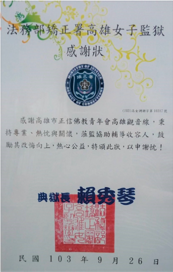
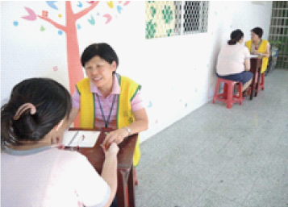
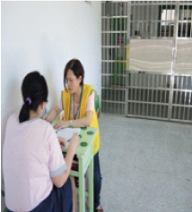
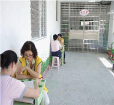
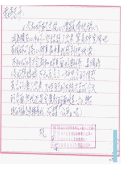
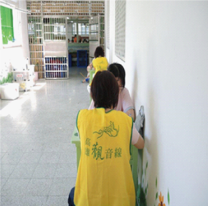

Women's prison
女子監獄
自民國98年5月高雄市正信佛教青年會觀音線協談中心即加入本監教誨工作行列，團隊志工們每週不畏風雨與辛苦，從不懈怠蒞臨本監從事收容人輔導工作，鼓勵受刑人，給予其欠缺與渴望的情感支持，並提供各項諮詢與生活資訊，
豐富與充實其獄中生活，運用熱情和智慧教化收容人；配合本監安排個別輔導，針對個案所需給予支持和關懷，
讓受刑人身、心、靈的需求皆得以滿足，引導其能較正向思考未來的人生，建立收容人復歸社會之礎石及動力，
頗具教誨成效，受刑人深感獲益良多，成效堪稱卓著。
法務部矯政署高雄女子監獄




結合法務部矯政署
高雄女子監獄 每個月固定第週
星期一下午1點30分~3點30分
協助辦理收容人
個別輔導教化工作
高雄女子監獄 每個月固定第週
星期一下午1點30分~3點30分
協助辦理收容人
個別輔導教化工作
上次和妳聊過後心情顯得很開心，因為積在心中的一些話說
了出來，算是種宣洩吧、、、 不知何時才會再和妳見面
好期待、、、
了出來，算是種宣洩吧、、、 不知何時才會再和妳見面
好期待、、、
怕自己不小心又掉進陷阱中、、、害怕有一天我的努力、、因為我
的脾氣、、、破功、、、 感謝上天能讓我遇到了妳─在我生命中妳就
像是、、、 每次晤談，妳總是能把我緊閉的心靈緩緩開啟、、、
幫助我用不同的角度去接待人、事、物、、、


的脾氣、、、破功、、、 感謝上天能讓我遇到了妳─在我生命中妳就
像是、、、 每次晤談，妳總是能把我緊閉的心靈緩緩開啟、、、
幫助我用不同的角度去接待人、事、物、、、
協談專線： 224-7181 行政專線: 224-8948
電 郵: kis.chba@gmail.com
服務時間： 每週一至週六 下午2：30 - 5：30 睌上6：30 - 9：30
帳號 : 元大銀行806-苓雅分行00108100175014
歡迎贊助 : 戶名:高雄市正信佛教青年會
電 郵: kis.chba@gmail.com
服務時間： 每週一至週六 下午2：30 - 5：30 睌上6：30 - 9：30
帳號 : 元大銀行806-苓雅分行00108100175014
歡迎贊助 : 戶名:高雄市正信佛教青年會